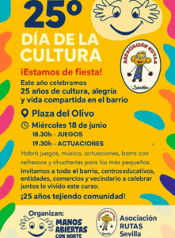
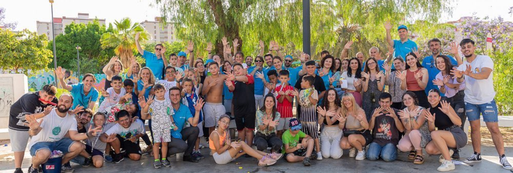
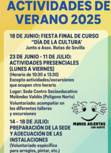

18 junio 2026 · Evento25º Día de la Cultura: 25 años tejiendo comunidad
Celebramos un cuarto de siglo en el barrio con juegos, música y actuaciones en la Plaza del Olivo. De 18:30 a 21:00h.
Somos una ONG de Sevilla que desde 1992 educa a niños y jóvenes en el Polígono Norte. Buscamos estudiantes de comunicación que quieran contar esta historia con nosotras.

Prácticas abiertas · curso 25/26 Barrio que cuidaIntervenimos donde la escuela no llega. Cada programa nace de una necesidad real detectada por las familias del barrio y acompaña a los menores en procesos concretos: convivencia, aprendizaje, verano y participación.
Los alumnos expulsados por conflictos continúan sus tareas con nosotras y participan en dinámicas de reinserción escolar. Una segunda oportunidad, no un castigo.
Talleres temáticos y un plan lector para mejorar las perspectivas escolares de los niños del Polígono. Las tardes se llenan de libros, preguntas y tutores voluntarios.
Padres, madres y cuidadoras reflexionan sobre su rol educativo. Cuando la familia se implica, lo aprendido en el centro se consolida en casa.
Tres estudiantes que llegaron buscando créditos y se fueron con un barrio entero en la cabeza.

«Entré a hacer reels y salí sabiendo escuchar. El Polígono me enseñó más que cuatro años de carrera.»

«Hicimos un mini-documental del campamento de verano. Hoy lo usan para pedir subvenciones: nuestra cámara vale dinero.»

«Diseñé su primera identidad visual. Ver el logo impreso en la camiseta de un niño del aula fue el mejor portfolio.»
Rellenas el formulario, te escribimos en 48h y te citamos a una charla informal en el centro para que veas cómo trabajamos y decidas.
Sesión de acogida, protocolo de protección del menor y briefing del área de comunicación. Todo en tu primera semana.
Entras al equipo, eliges un proyecto real y a los 15 días ya tienes una pieza publicada en redes o web con tu firma.
Datos públicos de nuestra memoria anual. Auditados por la Red La Salle Andalucía y revisados por la Junta Directiva.

Crónicas, reflexiones y noticias que cuentan lo que pasa entre las paredes de la Plaza Río de Janeiro y Meléndez Valdés.

18 junio 2026 · EventoCelebramos un cuarto de siglo en el barrio con juegos, música y actuaciones en la Plaza del Olivo. De 18:30 a 21:00h.

18 junio 2026 · ConvocatoriaFiesta final de curso, actividades presenciales y adecuación de la sede. Voluntariado abierto en talleres, excursiones y reformas.
 14 marzo 2026 · Reflexión
14 marzo 2026 · Reflexión
Sobre el taller de familias que hemos estrenado este trimestre y por qué funciona mejor de lo que esperábamos.
Abre tu sitio en nuestro equipo de comunicación. Te escribimos en menos de 48h y concertamos la primera charla.
Te escribimos en menos de 48 horas desde comunicacion@manosabiertasnorte.org. Mientras tanto, síguenos en @ajmanosabiertas.